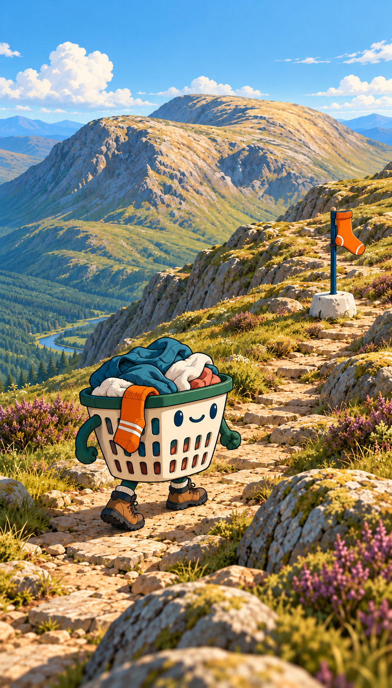
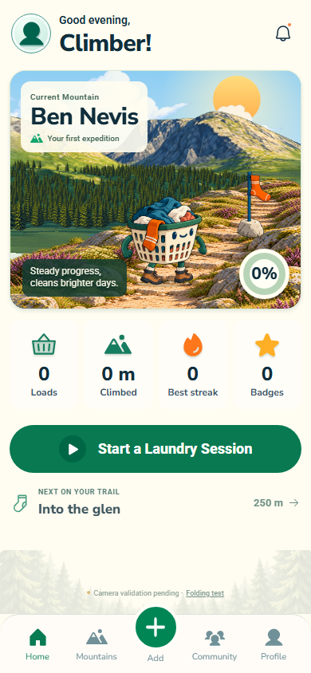
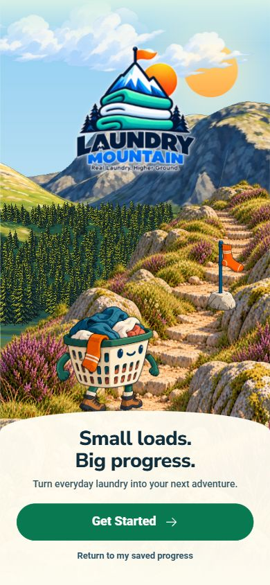
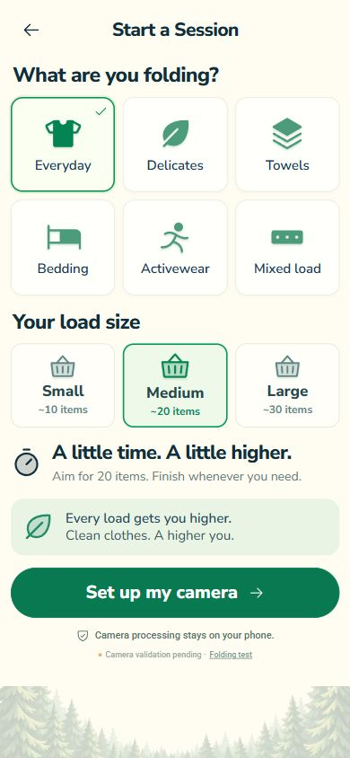
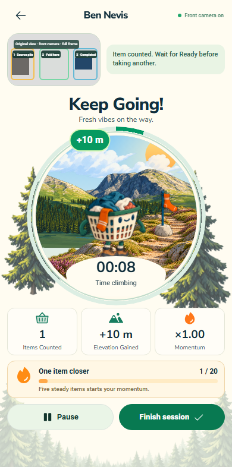
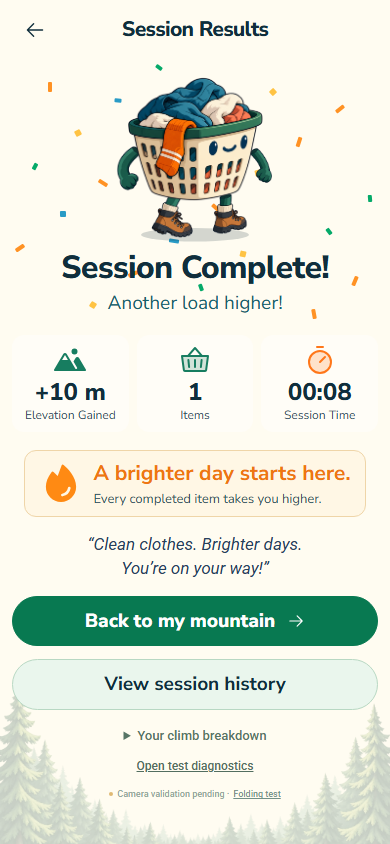

Selected art reference alongside the running app. Actual local progress is zero. Game controls and real Ben Nevis geometry are intentional differences.
Selected character & scenery reference

Art direction, without application controls. Aspect ratio retained.Implemented climb · 390 × 844Separate terrain, foreground, character, checkpoint and UI layers. Position follows saved Laundry Metres.Implemented home · 390 × 844

Same character and landscape treatment. Adult audience; restrained interface.
Onboarding

Session setup

Live session · synthetic fixture

Results · synthetic fixture

Software verification is separate from physical camera acceptance. Last real-phone test counted zero. Netlify deployment remains paused.
 Separate terrain, foreground, character, checkpoint and UI layers. Position follows saved Laundry Metres.
Separate terrain, foreground, character, checkpoint and UI layers. Position follows saved Laundry Metres.